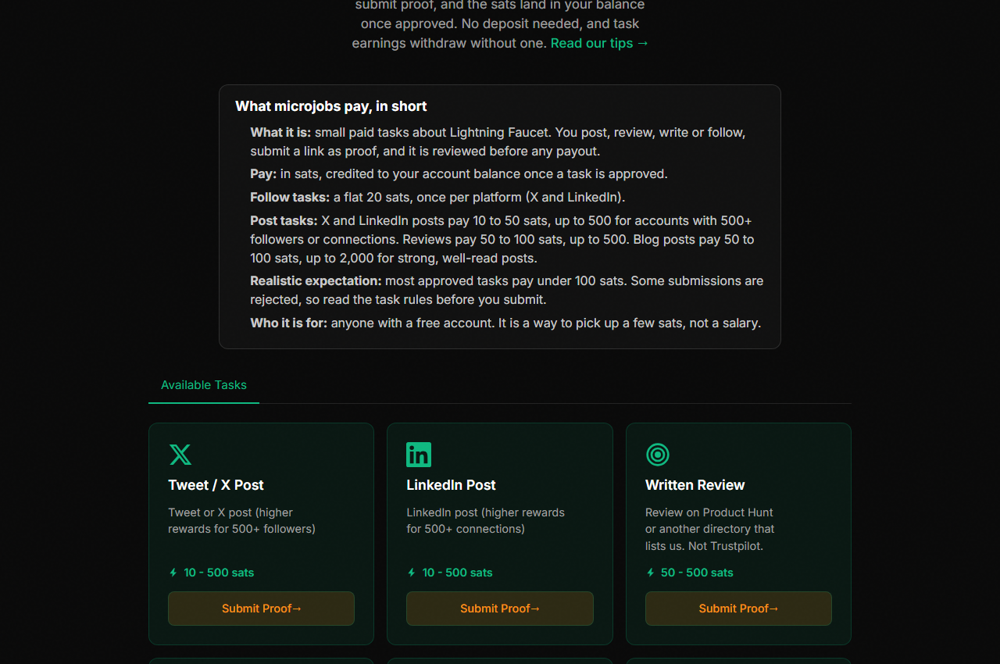

Que rapporte un article sur LightningFaucet, et quand peut-on retirer ses sats ?
Si vous écrivez un article pour LightningFaucet, combien de satoshis pourrez-vous réellement retirer ? Une publication courte peut rapporter quelques dizaines de satoshis. Pour quelqu’un qui démarre avec un solde nul, un détail compte. Le retrait minimum annoncé est de 100 sats. Un satoshi représente un cent-millionième de bitcoin. Règles des microjobs
Prenons un exemple. Vous rédigez un court billet, vous transmettez son lien et le site vous accorde 50 sats. Votre travail a bien été payé sur votre compte, mais il manque encore 50 sats pour faire un premier retrait. Si un autre travail approuvé vous rapporte ensuite ces 50 sats, vous atteignez le minimum. Les revenus de ces travaux sont retirables sans dépôt. La plateforme demande un portefeuille compatible Lightning au moment du retrait. Conditions de retrait

Préparer un article que le lecteur peut vérifier
Pour une brève mention sur un blog, la fourchette annoncée va de 50 à 100 sats. Pour un pas-à-pas d’au moins 300 mots, accompagné de captures, elle va de 100 à 500 sats. Le plafond de 2 000 sats apparaît sur la ligne des tutoriels approfondis. Le site précise que la plupart des travaux acceptés, toutes catégories confondues, rapportent moins de 100 sats. Barème éditorial · Montants habituels
Pour que le lecteur puisse refaire votre parcours, montrez la rubrique consultée et la condition qui vous intéresse. Une capture d’écran suffit souvent à expliquer où regarder. Vérifiez qu’elle ne contient aucune adresse personnelle ni code de récupération. Vous pouvez publier sur votre blog, sur Medium, Substack ou Hashnode. Gardez le lien accessible au public et mentionnez la rémunération possible. C’est ce lien que vous transmettez avec votre demande. Guide de publication
Lors de la vérification, gardez sous la main le lien publié et celui de votre demande. Si le texte est refusé, vous pourrez relire le motif. S’il est accepté, vérifiez le montant crédité et le solde disponible au retrait. Ce sont ces deux chiffres qui vous diront ce que votre article a réellement rapporté. Suivi des demandes